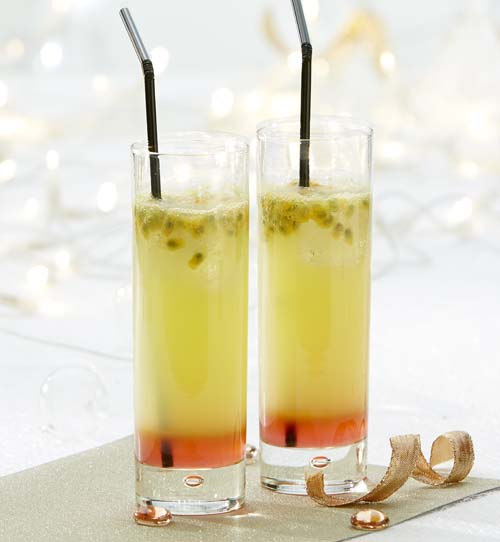

Passion sunrise
Ingrediënten
- Groenten / Fruit
- Vloeistoffen
- 2 eetl. grenadine
- 20 cl sinaasappellimonade
-
1 ijsblokje

Bereiding 5 min
- Doe het ijsblokje en het vruchtvlees van de halve passievrucht in een longdrinkglas.
- Voeg de grenadine toe.
- Giet er daarna de sinaasappellimonade langs de bolle kant van een lepel bij
voor een mooi kleureffect.